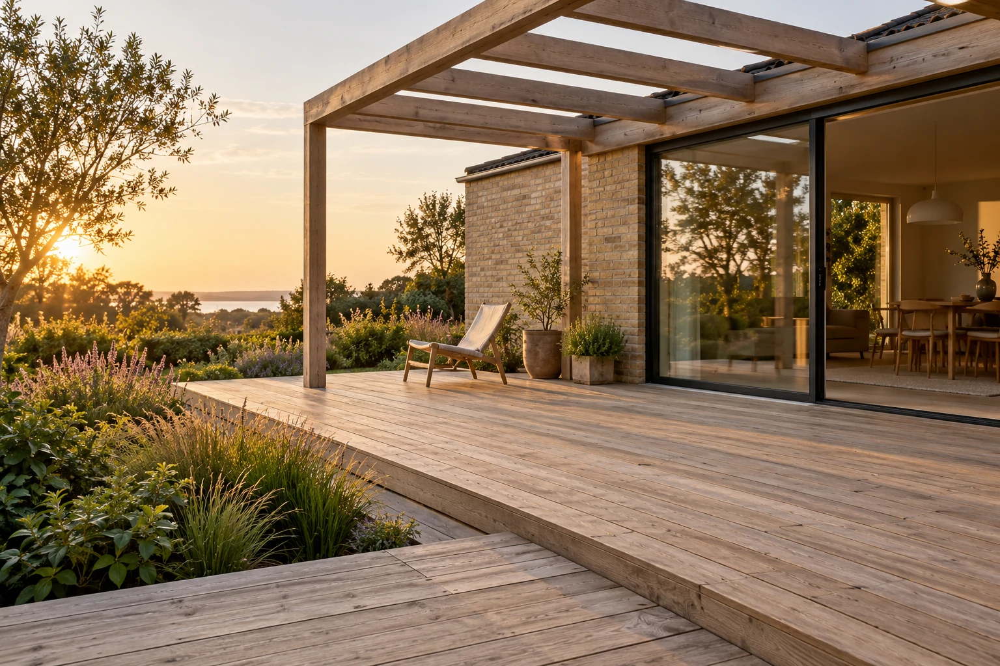
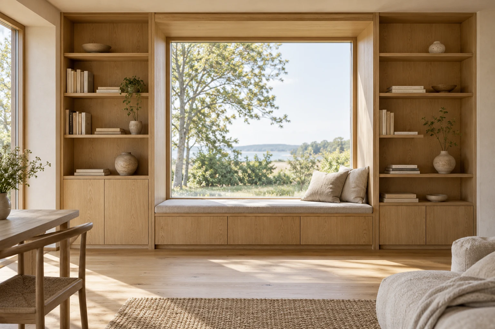

Holm / Opgaver & idéer
Rum for
muligheder.
Et materiale, en samling, en ny måde at bruge et rum på. Her viser vi, hvordan en god idé kan tage form.
Alle projekter er fiktive eksempler. Visualiseringer og tegninger viser muligheder — ikke rigtige kunders hjem.
Viser 6 opgaver
-

Visualisering / 01Terrasse & pergola
Mellem hus og have
Et uderum, hvor bræddernes retning, niveauerne og skyggen fra en pergola samler huset og haven.
Om løsningen
Tænk over solens retning og de steder, du helst vil opholde dig. En trappe eller en lille niveauforskel kan give terrassen flere måder at blive brugt på.
Jeg har en lignende idé -

Visualisering / 02Reol & vinduesbænk
Plads til det personlige
En hel væg arbejder sammen: opbevaring langs siderne og en bænk i lyset fra vinduet.
Om løsningen
Når et møbel tilpasses rummet, kan de svære hjørner blive det bedste ved det. Her er vinduet udgangspunktet for en sammenhængende løsning.
Jeg har en lignende idé -
 Idéskitse / 03
Idéskitse / 03
Vinduer & afslutninger
Et nyt blik ud
Et vindue skal passe til facadens rytme, murens dybde og den måde, rummet bliver brugt på.
Om løsningen
Tegningen viser et princip for et sidehængt vindue og samlingen mellem karm, mur og lysning. Mål og løsning afhænger altid af det konkrete hus.
Jeg har en lignende idé -
 Idéskitse / 04
Idéskitse / 04
Tilbygning & havestue
Mere plads til hverdagen
En ny del af huset med en enkel taghældning og store åbninger mod haven.
Om løsningen
En tilbygning skal både fungere som nyt rum og som del af det eksisterende hus. Tegningen viser en mulig sammenhæng mellem tag, glas og den oprindelige facade.
Jeg har en lignende idé -
 Idéskitse / 05
Idéskitse / 05
Overdækning
En lidt længere sommer
Et tag over terrassen giver læ og gør det muligt at blive ude lidt længere.
Om løsningen
Stolpernes placering og tagets fald skal passe til terrassens brug og husets åbninger. Illustrationen viser en enkel opbygning med limtræsbjælke.
Jeg har en lignende idé -
 Idéskitse / 06
Idéskitse / 06
Tag & efterisolering
Det gode fundament ovenfra
Et kig ind i det arbejde, der ligger bag en tæt og holdbar tagflade.
Om løsningen
Tegningen er en principillustration af spær, hanebånd og isolering. Den konkrete opbygning skal altid afstemmes med husets konstruktion og behov.
Jeg har en lignende idé
Fra første tanke til sidste detalje
Din idé kan være
den næste begyndelse.
Har et af eksemplerne sat tanker i gang? Fortæl om dit hus og det, du gerne vil ændre. Så tager vi den derfra.
Fortæl om opgaven